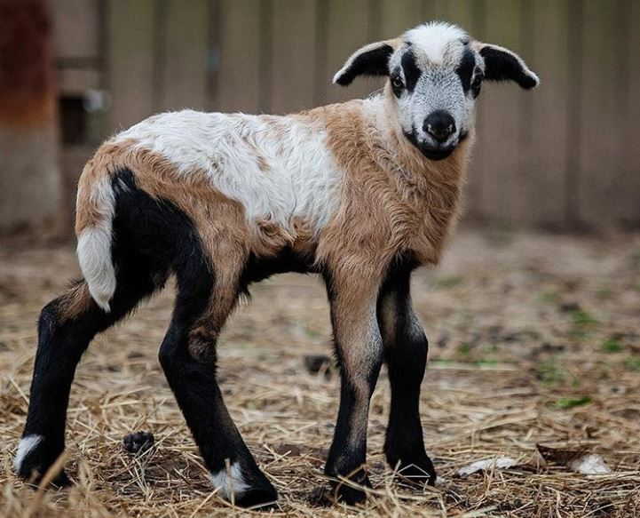
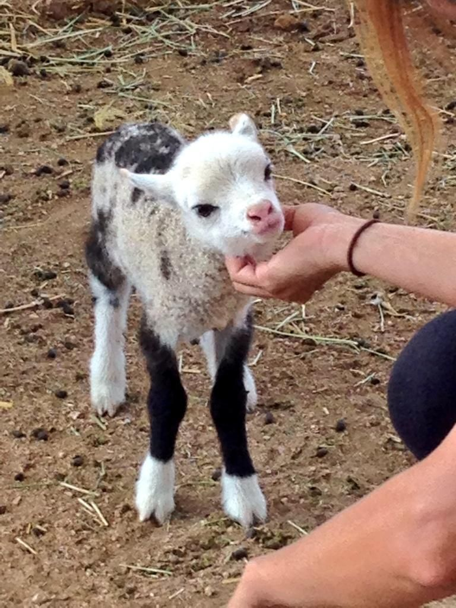

GEEP
Look at a Geep

What is a GEEP
A geep is a domestic sheep-goat hybrid, even if look similar and in the same family having a geep is rare, why?
It's because they're from an entirely different genus from another!
An Unordered list of Fun Facts About Them
- The genus that sheeps are from is Ovis, while the genus goats are from is Capra
- The genus Ovis has 54 chromosomes while the genus Capra has 60 chromosomes
- The geep hybrid is different from a sheep-goat chimera, the latter are artificially created by combining the embryos of a goat and sheep unlike being mated.
- They are also known as a Shoat
An Ordered List Of Confirmed Geeps
- In New Zealand which resulted in a litter of Geeps, reported in a veterinary journal in 1990
- At the Botswana Minstry of Agriculture in 2000
- On a farm close to Gottingen in Germany in March 2014
- In Kentucky, USA in May 2021
Scientific Classification of A Geep
| ROW 1 |
Classification |
Conservation Status |
Domesticated |
| ROW 2 |
Classification |
Kingdom |
Animalia |
| ROW 3 |
Classification |
Phylum |
Mammalia |
| ROW 4 |
Classification |
Order |
Artiodactyla |
| ROW 5 |
Classification |
Family |
Bovidae |
| ROW 6 |
Classification |
Subfamily |
Caprinae |
| ROW 7 |
Classification |
Tribe |
Caprini |
| ROW 8 |
Classification |
Hybrid |
Ovis aries x Capra aegagrus hircus |
Geep
